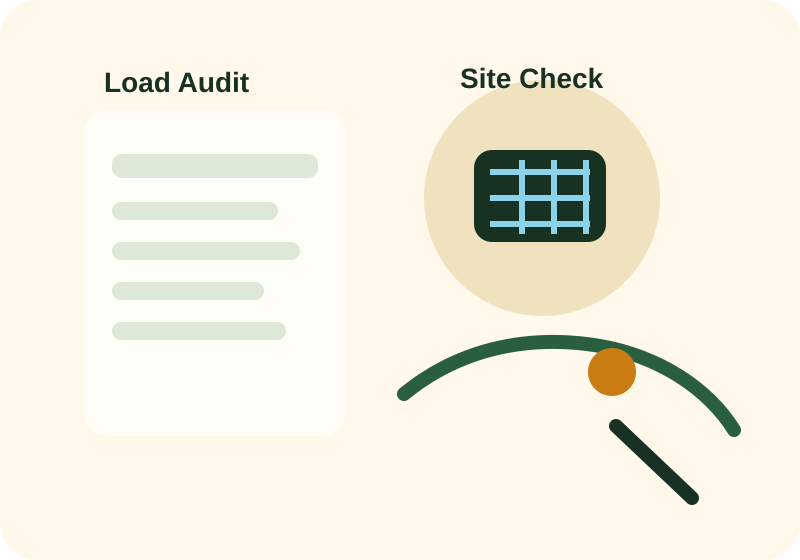

Array sizing
Solar array size depends on daily energy demand, local solar resource, expected losses, and whether the system is grid-assisted or stand-alone.
Design track
One of the most common mistakes in solar planning is starting with a guessed panel count. Better design starts with energy demand, critical loads, operating hours, surge behavior, and realistic production assumptions.

Page progress
This page pairs well with a written load-audit exercise using the downloadable worksheet.
Visual study aid

Step 1
A load audit lists the devices that will run on the system, how much power each device requires, how many hours it operates, and whether it must run during an outage. This turns vague expectations into measurable energy demand.
Critical loads should be separated from non-critical loads. Refrigeration, lighting, communications, medical devices, and pumps may need priority during limited-energy periods.
If the daily load estimate is wrong, every later decision can be wrong: panel sizing, battery sizing, inverter size, cable sizing, and budget planning.
Step 2
Solar array size depends on daily energy demand, local solar resource, expected losses, and whether the system is grid-assisted or stand-alone.
Battery capacity should reflect the required autonomy period, allowable depth of discharge, temperature effects, and efficiency losses.
The inverter must handle both continuous loads and startup surges from motors, compressors, and pumps.
Step 3
Often designed around lighting, entertainment, communications, fans, and selected sockets. The focus is usually outage support and bill reduction rather than full-house electrification.
Reliability and prioritization become more important. Education, vaccine storage, internet connectivity, and lighting quality may be mission-critical.
Productive loads, operating hours, diesel displacement, and downtime cost become central economic drivers.
Step 4
Use proper isolation, overcurrent protection, surge protection, and earthing practice.
Roof integrity, water sealing, and wind loading should be treated as engineering concerns.
Systems should be designed so technicians can inspect, clean, and repair them safely.
Even a well-designed system underperforms if users do not understand load limits and battery behavior.
Quiz